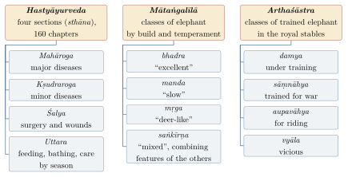

Chapter 15: Elephants and Horses: Hastyāyurveda and Aśvaśāstra¶
15.1 Two Royal Animals¶
Of all the animals discussed in this volume, the elephant and the horse were the least connected with the peasant economy and the most closely connected with kings. Both were instruments of war and emblems of sovereignty; both had their own bodies of specialised knowledge, preserved in Sanskrit treatises on their selection, care, training and medicine; and both were sources of great expense to the states that maintained them. Their histories in India are nevertheless almost opposite. The Asian elephant is native to the subcontinent, and Indian kings obtained their elephants by capturing them from the wild rather than by breeding them. The horse was not native to most of South Asia, did not thrive in much of its climate, and for over two thousand years Indian rulers depended heavily on horses imported from Central Asia, Iran and Arabia. These contrasting histories shaped the knowledge traditions examined in this chapter (Trautmann 2015; Digby 1971).
Warfare with elephants and cavalry is treated in Volume 20 (Yuddha and Dhanurveda); this chapter concentrates on the animals themselves and on the knowledge of their keepers.
15.2 Elephants in Early India¶
Elephants appear on the seals of the Indus civilisation, and their bones are found at Harappan sites, but there is no clear evidence that Harappans tamed them (Kenoyer 1998; Possehl 2002). The capture, taming and use of elephants for riding, work and war appear in the historical record in the Ganga valley in the first millennium BCE. Thomas Trautmann has argued that the military use of captive elephants was an Indian development, which spread from India to Southeast Asia, to the Achaemenid and Hellenistic kingdoms of the west and ultimately to Carthage (Trautmann 2015). Greek writers record that Seleucus I, after his war with Candragupta Maurya around 303 BCE, received five hundred elephants as part of the settlement, and that these animals played a part in the wars of his successors.
15.2.1 Capture Rather Than Breeding¶
Trautmann’s central observation is that Indian kings, with few exceptions, did not breed elephants in captivity. An elephant takes some fifteen to twenty years to reach working maturity, and a female in calf or nursing a calf cannot work; it was cheaper to capture adult animals from the wild and train them. The supply of war elephants therefore depended on the preservation of wild elephant populations and of the forests in which they lived. This, Trautmann argues, gave Indian kings a direct interest in protecting forests and forest peoples, who were the capturers and first trainers of elephants (Trautmann 2015).
The Arthaśāstra reflects exactly this interest. It provides for elephant forests (nāgavana) at the frontiers of the kingdom, under a superintendent with a staff of guards, and treats the killing of an elephant there as a capital offence. Its chapters on the superintendent of elephants describe the stables, the rations, the staff — physicians, trainers, grooms, cooks, guards — and the classes of trained elephant: those under training (damya), those trained for war (sāṃnāhya), those for riding (aupavāhya) and the vicious (vyāla) (Kangle 1965; Olivelle 2013). Like the rest of the Arthaśāstra, these chapters describe an administrative ideal; their dating follows that of the text as a whole (c. 50 BCE–300 CE in Olivelle’s analysis).
15.3 The Literature of Elephant Science¶
The body of Sanskrit knowledge about elephants is called gajaśāstra or hastividyā; its medical branch is hastyāyurveda or gajacikitsā. Its two best-known texts are the Hastyāyurveda ascribed to the sage Pālakāpya and the much shorter Mātaṅgalīlā of Nīlakaṇṭha.
15.3.1 Pālakāpya’s Hastyāyurveda¶
The Hastyāyurveda is a large work in prose and verse, printed in 1894 in the Ānandāśrama Sanskrit Series (Pālakāpya 1894). It is framed as a dialogue between the sage Pālakāpya and King Romapāda of Aṅga, whose capital was Campā in the eastern Ganga plain. In the legend Pālakāpya was born of an elephant mother and grew up among elephants in the forest; when Romapāda’s men captured the wild herd, the sage followed it to the court and there taught the king the knowledge of elephants and their diseases.
The work is divided into four sections (sthāna) with a total of 160 chapters:
-
Mahārogasthāna, on the major diseases;
-
Kṣudrarogasthāna, on the minor diseases;
-
Śalyasthāna, on surgery, chiefly the extraction of foreign bodies such as arrows and spear-heads and the treatment of wounds;
-
Uttarasthāna, the “later section”, on matters such as feeding, bathing, oiling, regimen by season and general care.
Disease is explained, as in human Āyurveda, through the three doṣas and the other categories of Āyurvedic physiology, and the treatments — oils, decoctions, purgation, enemas, fumigation, bleeding, surgery and dietary regimen — correspond closely to those of human medicine (Volume 13). The work also contains a great deal of mythology, auspicious and inauspicious marks, and ritual.
The date of the Hastyāyurveda is uncertain. The legend of Pālakāpya is old, and elephant physicians are mentioned in the Arthaśāstra; but the text as printed is a compilation that presupposes developed Āyurvedic doctrine, and it is best placed somewhere in the first millennium CE, with the possibility of later additions (Meulenbeld 1999). Older claims that it is a work of the third century BCE or earlier have no basis.
15.3.2 The Mātaṅgalīlā¶
The Mātaṅgalīlā (“The Sport of Elephants”) of Nīlakaṇṭha, a short work of uncertain date, probably from Kerala, was translated by Franklin Edgerton under the title The Elephant-Lore of the Hindus (Edgerton 1931). It is a compact handbook in verse that summarises the tradition: the myth that the first elephants were born from the shell of the cosmic egg from which the sun emerged, and the legend that elephants once had wings and flew until they were cursed by a sage whose tree they had broken; the auspicious marks of good elephants; the classes of elephant — in the commonest scheme, bhadra, manda and mṛga, with a mixed class (saṅkīrṇa) — distinguished by build, proportions and temperament; the stages of life; the signs and stages of musth (mada); the methods of capture; and the qualities of a good elephant-keeper. Edgerton’s translation remains the most accessible introduction to the subject for readers without Sanskrit. It should not be confused with the Hastyāyurveda, which is a different and much larger work. Figure 15.1 sets the divisions of the two texts beside the working classes of the Arthaśāstra’s stables.

15.3.3 Other Sources¶
Elephant lore is also found in the Bṛhatsaṃhitā (on the marks of elephants), in Purāṇas such as the Agni Purāṇa, which has chapters on the treatment of elephants and horses, and in the Mānasollāsa (Section 3.8), whose sections on royal pleasures include the training and sports of elephants (Shrigondekar 1925). A number of later elephant treatises survive in manuscript, many of them unpublished.
15.4 Capturing, Training and Keeping Elephants¶
15.4.1 Methods of Capture¶
The texts and later observers describe several methods of capture. Elephants were driven into concealed pits; noosed from the backs of trained elephants; lured by tame females used as decoys; or, in the largest operations, driven by lines of beaters into a stockade — the kheddā of Bengal, Assam and Mysore. The British officer G. P. Sanderson, who conducted kheddā operations for the Mysore government in the 1870s, left a detailed account of the method and of the skills of the forest people on whom it depended (Sanderson 1878). The capturers and first trainers were very often members of forest communities, a fact that the Sanskrit texts acknowledge only indirectly.
15.4.2 The Mahout¶
The trained elephant was managed by a rider and keeper — in Sanskrit hastipaka, hastyārohaka or mahāmātra, whence the modern “mahout” (Hindi mahāvat). The keeper controlled the animal with voice commands, pressure of the feet behind the ears and the goad (aṅkuśa). The Mātaṅgalīlā lists the qualities of a good keeper: knowledge of the elephant’s nature and moods, patience, courage and kindness (Edgerton 1931). In practice the craft was learned by apprenticeship, often within families or communities of hereditary mahouts, and much of it was never written down. Mahouts in Kerala, Karnataka, Assam and Sri Lanka still use command vocabularies inherited from these traditions.
15.4.3 Musth¶
All the elephant texts give careful attention to musth (mada), the periodic state in adult males marked by secretion from the temporal glands, dribbling of urine and heightened aggression. The texts describe its stages and its signs and prescribe changes of diet and restraint during it; they also treat the flow of mada as a sign of vigour and therefore of value in a war elephant. Modern research has shown that musth is associated with greatly raised levels of testosterone and plays an important part in the reproductive competition of bulls (Sukumar 2003). The traditional descriptions of its outward signs are accurate observations; their physiological explanations are those of Āyurveda.
Health and Safety Note
The treatments described in the elephant and horse treatises are reported here as historical evidence of what the texts prescribe. Several involve purgatives, bleeding, cautery or substances that are toxic in quantity, and none has been tested by modern veterinary science. They are not a guide to the care or treatment of animals. Sick animals should be seen by a qualified veterinarian; the care of captive elephants in particular is a specialised field governed in India by law and by veterinary guidelines.
15.5 Elephants, Kings and Empires¶
In the ideal of the Indian army as four-limbed (caturaṅga) — infantry, cavalry, chariots and elephants — the elephant was the most prestigious arm and the king’s own mount (Figure 15.2). The Delhi Sultans, whose cavalry came from the Persianate north-west, quickly adopted the elephant as well, obtaining animals by capture, purchase and tribute from Bengal, Odisha and the forests of central India; Simon Digby showed how the control of the supply routes for war-horses and elephants shaped the politics of the Sultanate (Digby 1971). The Mughals maintained very large elephant establishments, and the Āʾīn-i Akbarī records Akbar’s elephant stables in detail — the classes of elephants, their rations and the numbers of attendants assigned to each (Abū’l-Faẓl 1873; Gommans 2002). Bābur, a newcomer from Central Asia, recorded in his memoirs his first impressions of the Indian elephant and its uses (Thackston 1996).
Elephants also served in ceremony and religion. They carried kings and images in procession, were kept by temples, and in Kerala remain central to temple festivals (pūram); the Dasarā procession at Mysore is another famous example. Ivory was worked into a variety of objects from early times (see Volume 17).

15.6 The Elephant in Religion and Art¶
The elephant’s place in Indian religion and art is older and wider than its use in war. In Vedic and epic mythology Indra rides the white elephant Airāvata, born from the churning of the ocean, and elephants of the quarters (diggaja) support the world at its eight directions. The elephant-headed Gaṇeśa, remover of obstacles, became from the Gupta period onwards one of the most widely worshipped deities of India. The motif of Gajalakṣmī, the goddess Lakṣmī lustrated by two elephants pouring water over her from pots held in their trunks, appears on early Buddhist monuments such as the railings of Bharhut and Sanchi and on coins, and remained a symbol of prosperity and royal fortune. In Buddhist tradition Queen Māyā dreamed of a white elephant entering her side before the Buddha’s birth, and the Jātaka stories include tales in which the Bodhisattva is born as an elephant. The great rock-cut elephants of Mamallapuram and the elephant friezes of temple plinths across the south show how closely the animal was tied to the image of royal and divine power.
15.7 Colonial Capture and Protection¶
Under colonial rule the capture of wild elephants continued on a large scale, now organised by forest departments and private contractors for the army, the timber industry and sale. Two methods were especially important: the kheddā stockade drive, practised in Mysore, Assam and Bengal, and melā shikār in Assam, in which riders on trained elephants pursued and noosed wild animals. Large numbers of captured elephants died in the process or soon afterwards. At the same time the government recognised that unrestricted killing threatened the supply: the Madras presidency protected wild elephants by law in 1873, and the Elephants’ Preservation Act of 1879 extended protection more widely, while still permitting capture under licence and the killing of animals declared dangerous (Rangarajan 2001; Sukumar 2003). Working elephants hauled timber in the forests of the Western Ghats, Assam and Burma well into the twentieth century. The great elephant fairs, of which the Sonepur fair at the confluence of the Gaṇḍak and the Ganga in Bihar was the most famous, were for long the main markets for captive elephants; the sale of elephants has since been restricted by wildlife law.
15.8 Elephants Today¶
The Asian elephant (Elephas maximus) is classified as endangered. India holds the largest share of the remaining wild population, but its range has been greatly reduced and fragmented by agriculture, roads, mining and settlement, and conflict between elephants and farmers — crop raiding on one side, the killing of elephants on the other — is now among the most serious conservation problems in the country (Sukumar 2003). The Government of India launched Project Elephant in 1992 to protect elephant habitat and corridors. Large numbers of elephants also live in captivity, in temples, with private owners and in forest departments, where their welfare — chaining, inadequate exercise, unsuitable diets, the stress of festivals — has become a matter of legal and public concern. Raman Sukumar’s ecological work has combined field biology with the history of the human–elephant relationship and is the starting point for modern study (Sukumar 2003).
15.9 Horses in Early India¶
15.9.1 Archaeology and the Ṛgveda¶
No securely identified domestic horse has been found at Mature Harappan sites. Claims for horse remains at a few Harappan and late Harappan sites have been disputed by specialists, and the earliest widely accepted evidence for domestic horses in South Asia belongs to the second millennium BCE (Meadow 1996; Possehl 2002). Claims that Harappan terracotta figurines represent horses have not been accepted. In the Ṛgveda, by contrast, the horse (aśva) and the light chariot with spoked wheels are everywhere: in the racing and warfare of gods and men, in the hymns to the sacrificial horse (Ṛgveda 1.162 and 1.163), and in the names of deities such as the Aśvins (Jamison and Brereton 2014). The contrast is one of the main pieces of evidence in the debate over the relationship between the Indus civilisation and the speakers of Vedic Sanskrit (see Volume 1).
15.9.2 The Horse Sacrifice¶
The aśvamedha, the horse sacrifice performed by a king claiming paramount sovereignty, is described at length in the Śatapatha Brāhmaṇa and the ritual sūtras. A consecrated stallion was allowed to wander for a year, guarded by armed men, and then sacrificed. Several historical kings, from the Śuṅga Puṣyamitra to the Gupta Samudragupta, claimed to have performed it. The Bṛhadāraṇyaka Upaniṣad opens with a meditation that identifies the sacrificial horse with the cosmos (Olivelle 1998):
Bṛhadāraṇyaka Upaniṣad 1.1.1
uṣā vā aśvasya medhyasya śiraḥ
“The dawn, clearly, is the head of the sacrificial horse.”
The passage goes on to identify the horse’s eye with the sun, its breath with the wind and its body with the year. It is a ritual and contemplative identification. The Ṛgveda already gives the Sun a chariot drawn by seven mares (1.50.8), an image that later mythology and temple art developed; the number seven belongs to a widespread pattern of Vedic symbolism and is not an observation of the colours of sunlight.
15.10 Horses and the Horse Trade¶
Much of the subcontinent is poorly suited to breeding horses: the humid climate of the south and east, the lack of suitable grazing, and diseases took a heavy toll, and Indian-bred horses were generally regarded as inferior to imported ones. The arid north-west — Sindh, Punjab, Rajasthan, Kathiawar — and the Deccan plateau were partial exceptions, and these regions developed their own horse-breeding traditions (Gommans 2002). For the most part, however, Indian states obtained cavalry horses by import: overland from Central Asia and Afghanistan through the passes of the north-west, and by sea from the Persian Gulf and Arabia to the ports of Gujarat, the Konkan, Malabar and the Coromandel coast (Digby 1971). Late-thirteenth-century observers, among them Marco Polo, described the large sums spent by south Indian kings on imported Arabian horses, many of which soon died; in the sixteenth century the horse trade through Goa was a vital interest of the Vijayanagara kings. Sanskrit horse texts reflect this situation in their lists of horses by country of origin, which name the north-western regions (Sindhu, Kamboja, Bāhlīka/Balkh) and Persia among the best sources.
15.11 The Śālihotra Tradition and Aśvaśāstra¶
15.11.1 Śālihotra and the Horse Texts¶
In Sanskrit tradition the founder of horse science (aśvaśāstra, aśvāyurveda) is the sage Śālihotra, and the name became so closely associated with horse medicine that in Hindi and Urdu a horse doctor is still called a sālotrī. The epic tradition also associates expert knowledge of horses with Nakula, one of the five Pāṇḍavas. A number of works circulate under Śālihotra’s name, in different recensions; like the Hastyāyurveda, they presuppose developed Āyurvedic doctrine, and in their surviving forms they are medieval. Older claims that Śālihotra wrote in the third century BCE or earlier rest on tradition alone. Other horse treatises include the Aśvacikitsita ascribed to Nakula, the Aśvavaidyaka of Jayadatta, and horse sections in the Agni Purāṇa and in Someśvara’s Mānasollāsa (Shrigondekar 1925; Meulenbeld 1999).
Śālihotra material was adapted into Persian from the Sultanate period onwards, and Persian versions known as Sālotar circulated widely; illustrated Persian horse books were produced at Mughal and regional courts. These works combined Indian material with the hippology of the Islamic world, which had its own rich tradition. The English word “farrier”, which is sometimes said to derive from Śālihotra, in fact comes through French from Latin ferrarius, “worker in iron”, and has nothing to do with Indian horse science.
15.11.2 Contents of the Horse Treatises¶
The horse treatises cover broadly similar ground:
-
the mythical origin of horses — from the churning of the ocean, which produced the divine horse Uccaiḥśravas, and the legend that horses once had wings;
-
the classification of horses by place of origin, colour, build and temperament, and their auspicious and inauspicious marks, among which the position of hair whorls (āvarta) is particularly important — a feature shared with Arab and Persian hippology;
-
judging age by the teeth, and the qualities of a good horse for war, riding and display;
-
stable construction, grooming, feeding and exercise, and regimen by season;
-
the diseases of horses, explained through the doṣas, and their treatments by oils, decoctions, fumigation, bleeding, cautery and surgery.
Like the elephant texts, they record a long experience of keeping horses and contain accurate descriptions of external signs. Their medical theory is Āyurvedic, and their treatments are of historical interest only (see the safety note above).
15.12 The Horse in Indian Art and Culture¶
Because horses were costly and associated with kings and warriors, they became potent symbols. The Sun god Sūrya is shown driving a chariot drawn by seven horses, and the thirteenth-century Sun temple at Konark in Odisha was conceived as his colossal stone chariot, with carved wheels and rearing horses. Equestrian figures of warriors and heroes appear on memorial stones (vīrakal) of the Deccan and the south, and the terracotta horses offered to village guardian deities such as Aiyaṉār in Tamil Nadu, and in the Bankura region of Bengal, are among the best-known forms of Indian folk art. Rajput and Mughal painting produced a rich tradition of equestrian portraits, and Mughal and Deccani artists painted individual horses from the royal stables with the same care as they gave to the emperors’ elephants. The great animal fairs at Pushkar and Sonepur (Section 13.10) were also horse markets.
The keeping of horses also involved specialist communities: grooms (sāīs), horse-dealers, farriers and horse-doctors, whose skills, like those of mahouts, were learned within families. Many of the dealers who brought horses from Central Asia and Afghanistan in the Mughal period were Afghans and Central Asians, while the grooms and keepers in Indian stables were drawn from local service communities (Gommans 2002).
15.13 Horse Breeds and Horse Cultures¶
Several distinctive horse and pony breeds are recognised in India today: the Marwari of Rajasthan and the Kathiawari of Gujarat, both with their characteristic inward-curving ear tips; the Manipuri pony, ridden in the Manipuri game of sagol kangjei, from which British officers in Manipur and Cachar learned modern polo in the mid-nineteenth century; and the hill ponies of the Himalaya — Spiti, Zanskari and Bhutia. Their histories are poorly documented before the modern period, and claims that particular modern breeds descend from horses named in Sanskrit texts cannot be verified. The Marathas, whose light cavalry dominated eighteenth-century warfare, bred horses in the Bhīmā valley of the Deccan (the Bhīmthaḍī horse), a breed that has become rare (Gommans 2002).
Under colonial rule the army established stud farms to breed remounts; the estate at Pusa in Bihar, where the agricultural research institute was founded in 1905, had earlier been a government stud. Modern veterinary education in India began in the late nineteenth century, partly to serve the army’s horses and the cattle of the countryside (see Chapter 13).
Summary¶
Elephants and horses were the animals of kings. The elephant, native and wild-caught, gave rise to a knowledge tradition — Pālakāpya’s Hastyāyurveda, the Mātaṅgalīlā, the Arthaśāstra’s elephant forests — rooted in the forest and in the skills of capturers and mahouts, and its supply depended on preserving the forests where elephants lived. The horse, largely imported and expensive, gave rise to the aśvaśāstra literature ascribed to Śālihotra, which travelled into Persian as Sālotar and met the hippology of the Islamic world. Both traditions are medieval in their surviving texts, both applied the framework of Āyurveda to animals, and both preserve careful observation alongside myth and ritual. Today the elephant is an endangered species whose survival depends on reconciling it with farmers; the Indian horse breeds are a small but distinctive heritage.
Further Reading¶
Trautmann (2015) is the essential historical study of elephants and kings; Edgerton (1931) translates the Mātaṅgalīlā; Sukumar (2003) covers elephant biology and conservation. For horses and the horse trade see Digby (1971) and Gommans (2002); for the medical literature, Meulenbeld (1999).